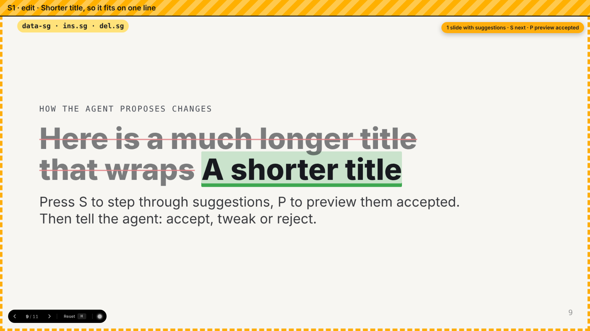

An example deck · made with html-deck-kit
Your slides, as a web page your agent can edit
How this deck got made, in about a dozen slides
Hi. Yes, you
It's right now where you are, and this slide just checked
A picture of a slide couldn't do that. A web page can
The problem
Your agent can't reach inside a slide app, but it can edit a file
So make the deck a file
Three habits
What the kit runs on
Interview first
The agent asks before it builds
One chunk at a time
React to real slides, not plans
You stay the editor
Press E and fix the words yourself
Getting started
Three moves to a first slide
- Copy the kit into a folder for your talkDownload the zip, or "Use this template" on GitHub
- Open the folder in your agent and say: "Read AGENTS.md and start the kickoff interview"
- Answer a few questions at a time"recs" accepts its recommendations; "later" skips one
Press → to reveal each step. This list waits for you

The starter
Twelve slides, already in a good order
Title, promise, your turn, thanks, with backup after the close

Suggest, don't surprise
Changes show up on the slide
S steps through them, P previews them accepted, then you reply in bulk
Slides that run code
Ticking only while you're on this slide. Leave and come back: it starts over
Liked that?
There's a whole menu: fourteen effects and some magic keys
Each one comes with the sentence to give your agent. Open the effects menu
Before the day
Three checks before you present
Run the checks
One script finds TODOs, missing files, faint colors
Print to PDF
Your backup if anything fails
Scan every QR
From a phone, from the back row
Bring your colors and your voice. The structure's already here
Make your own
Thank you
Copy the kit and start your own deck
Psst: press C. You made it to the end
Appendix
Backup slides for questions. Press F to search.
Backup · the abstract, checked
What this deck promised, and where
| The abstract says | Where it happens |
|---|---|
| "See how an agent interviews you before it builds" | Promise, Getting Started |
| "Watch changes arrive as suggestions you can accept" | Suggestions |
| "Leave knowing what to check before the day" | Before the Day |